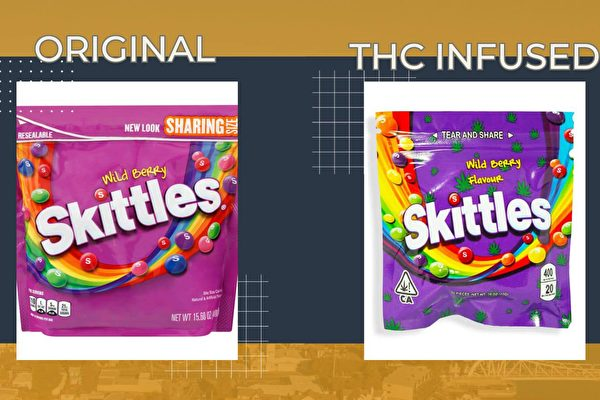

脸书网站上发布的大麻糖果（右）与普通糖果（左）对照图。（Alameda Police Department） 【2024年08月07日讯】（记者Matthew Horwood报导/周行编译）联邦卫生部的一份简报称，加拿大大麻合法化与幼儿意外中毒事件增加有关。该简报称：“各种证据表明，大麻合法化和与大麻相关的急诊、住院、重症病房护理，以及毒品中心呼叫的增加之间，存在显着关联。”
简报称，寻求治疗的个案增加，主要是由于五岁以下的儿童“意外摄入”食用大麻。这些大麻的来源“不明或属非法”。
加拿大卫生部规定，大麻产品的包装，必须对标识和颜色进行限制，并采用儿童防护容器。但是，许多非法食用产品的外观，类似于“对儿童有吸引力的”流行糖果，比如Starbursts和Skittles。
在之前发表的一项研究中，加拿大公共卫生局表示，在加拿大，意外大麻中毒导致的非致命性住院人数，比阿片类药物中毒更多。大多数与大麻有关的中毒事件发生在住宅环境中，例如自己家或朋友家中。
卫生局在2020年发布的该报告中说：“2017年至2018年，10至24岁的青少年中，因药物滥用导致伤害而住院的人数为23,589人，其中与大麻有关的个案，比与酒精、阿片类药物和可卡因等任何其他物质有关的个案都更为常见。”
从2023年10月开始的、针对大麻合法化的法定审查，质疑该计划是否实现了消除大麻黑市、以及保护儿童的目标。
专家小组的报告说：“大麻合法化的主要目标之一，是保护加拿大人的健康和安全，防止大麻落入儿童和青少年手中。”
“然而，我们接触过的许多人都担心，加拿大青少年的大麻使用率，与其他司法管辖区相比仍很高；而且，合法化并没有导致青少年大麻使用率明显降低。”
责任编辑：岳怡